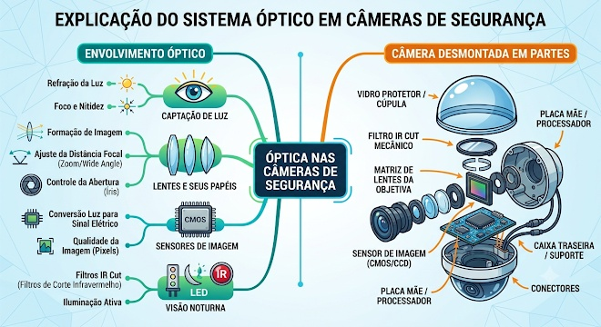
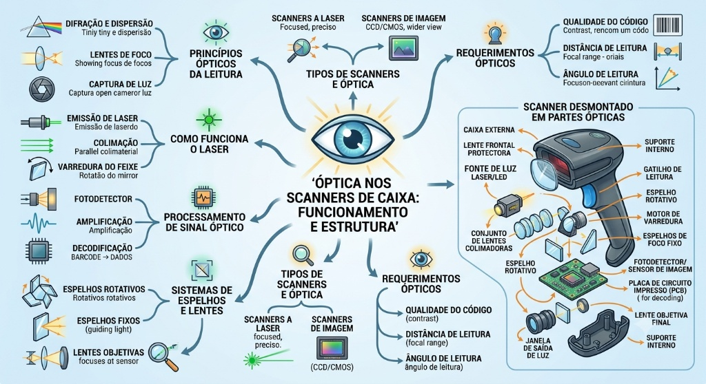
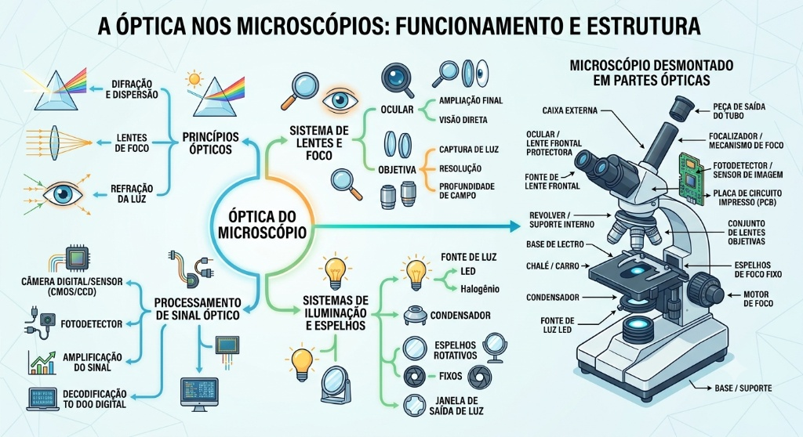
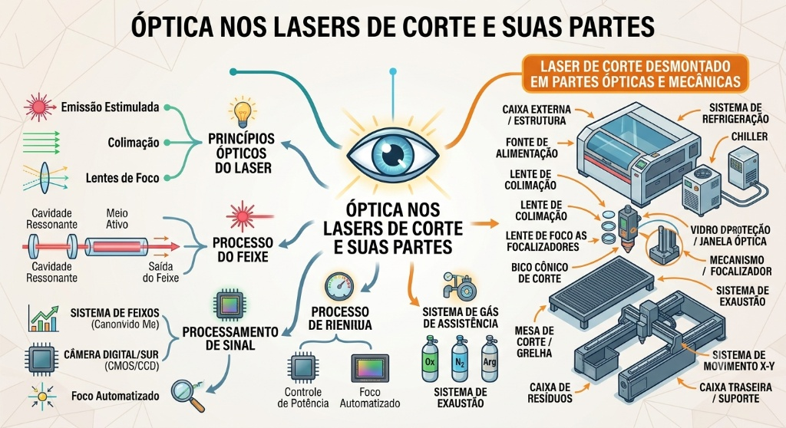

O que é Baixa Visão?
A baixa visão (ou visão subnormal) é uma condição crônica caracterizada pela perda severa da capacidade visual que não pode ser totalmente corrigida por meio de óculos convencionais, lentes de contato, cirurgias ou tratamentos médicos. Diferente da cegueira total, a pessoa com baixa visão possui um resíduo visual útil que pode ser maximizado com tecnologias assistivas, ampliação e iluminação adequada.
Exemplos de Condições e Doenças
Conheça as principais patologias e condições visuais que causam a baixa visão:
- Degeneração Macular Relacionada à Idade (DMRI): Afeta a parte central da retina, prejudicando a visão de detalhes finos e leitura.
- Glaucoma: Danifica o nervo óptico, causando perda progressiva da visão periférica (visão em túnel).
- Retinopatia Diabética: Lesões nos vasos sanguíneos da retina provocadas por complicações do diabetes.
- Catarata Congênita ou Avançada: Opacificação do cristalino que impede a passagem limpa da luz.
- Albinismo Ocular: Falta de pigmentação na retina e íris, gerando extrema sensibilidade à luz (fotofobia) e baixa acuidade visual.
- Daltonismo Severo / Acromatopsia: Dificuldade ou incapacidade total de distinguir cores, dependendo fortemente do contraste de brilho para orientação.
Importância da Sinalização Luminosa
- Direcionamento: Cores e luzes ajudam a identificar caminhos e rotas em ambientes internos e externos.
- Limites e Obstáculos: O alto contraste torna visíveis portas, degraus e barreiras arquitetônicas.
- Intensidade de Luz: Variações de brilho destacam saídas de emergência e áreas de circulação principal.
- Substituição de Placas: Pessoas com baixa visão percebem feixes luminosos e contrastes muito melhor do que textos impressos pequenos.
Aplicações Práticas de Sistemas Ópticos
Abaixo estão representadas as imagens conceituais dos sistemas ópticos e suas aplicações tecnológicas:
1. Câmera de Segurança

2. Scanner de Caixa

3. Microscópio Óptico

4. Laser de Corte

Projeto 01: Simulador de Semáforo Acessível
Montagem de um protótipo com Arduino simulando um semáforo veicular, focado em experimentos de acessibilidade e cultura maker.
Projeto 02: Simulador de LED RGB e Intensidade
Aplicação baseada na variação de cor e brilho para sinalização de ambientes de circulação.